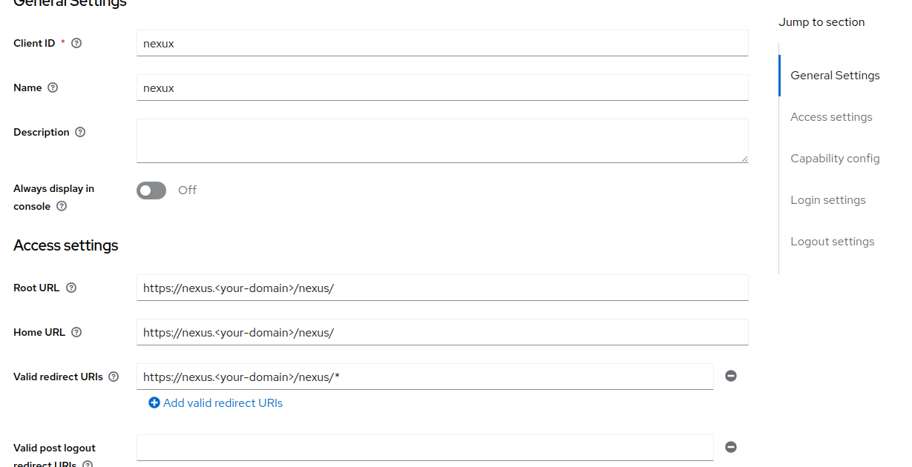
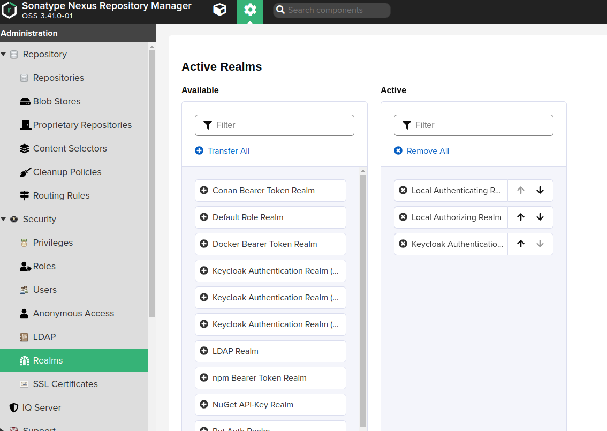

Nexus¶
Nexus Repository OSS is an open source repository that supports many artifact formats, including Docker, Java™, and npm. With the Nexus tool integration, pipelines in your toolchain can publish and retrieve versioned apps and their dependencies by using central repositories that are accessible from other environments.
Requirements¶
Configuration¶
First we will need to configure Keycloak. We will assume that we have a new Realm called Factory.
Keycloak - Clients¶
Create nexus user.

Configure Service account roles.
Configure Roles
SA for roles¶
Assign roles to nexus user for view realms, users and clients.

Keycloak - Groups¶
Create nx-admin group with Role Mappins.

Keycloak - Users¶
Join user to a nx-admin group.
Nexus¶
Download Keycloak conection adaptor for client.

The YAML file for the Helm Chart is:
image:
# Bug: https://github.com/sonatype/docker-nexus3/pull/148
#tag: 3.41.1
tag: 3.41.0
nexus:
env:
- name: INSTALL4J_ADD_VM_PARAMS
value: |-
-Xms2703M -Xmx2703M
-XX:MaxDirectMemorySize=2703M
-XX:+UnlockExperimentalVMOptions
-XX:+UseCGroupMemoryLimitForHeap
-Djava.util.prefs.userRoot=/nexus-data/javaprefs
- name: NEXUS_SECURITY_RANDOMPASSWORD
value: "true"
- name: NEXUS_CONTEXT
value: "nexus"
readinessProbe:
path: /nexus
nexusPort: 8081
deployment:
initContainers:
- name: plugin-install
image: curlimages/curl:latest
imagePullPolicy: IfNotPresent
command:
- 'wget'
- '-O'
- '/opt/sonatype/nexus/deploy/nexus3-keycloak-plugin-0.5.0.jar'
- 'https://github.com/flytreeleft/nexus3-keycloak-plugin/releases/download/v0.5.0/nexus3-keycloak-plugin-0.5.0.jar'
volumeMounts:
- name: deploy
mountPath: /opt/sonatype/nexus/deploy
securityContext:
allowPrivilegeEscalation: true
additionalVolumes:
- name: deploy
emptyDir:
sizeLimit: 100Mi
additionalVolumeMounts:
- name: deploy
mountPath: /opt/sonatype/nexus/deploy
config:
enabled: true
mountPath: "/opt/sonatype/nexus/etc/keycloak.json"
subPath: keycloak.json
data:
## Set up the keycloak Nexus client configuration
keycloak.json: |-
{
"realm": "factory",
"auth-server-url": "https://keycloak.<your-domain>/auth/",
"ssl-required": "external",
"resource": "nexux",
"verify-token-audience": true,
"credentials": {
"secret": "<secret>"
},
"use-resource-role-mappings": true,
"confidential-port": 0,
"policy-enforcer": {}
}
ingress:
enabled: true
ingressClassName: nginx
annotations:
external-dns.alpha.kubernetes.io/hostname: nexus.<your-domain>
nginx.ingress.kubernetes.io/proxy-body-size: "0"
nginx.ingress.kubernetes.io/server-snippet: |
location ~ ^/(v1|v2)/[^/]+/?[^/]+/blobs/ {
client_max_body_size 10G;
if ($request_method ~* (POST|PUT|DELETE|PATCH|HEAD) ) {
rewrite ^/(.*)$ /nexus/repository/docker-private/$1 last;
}
rewrite ^/(.*)$ /nexus/repository/docker-group/$1 last;
}
location ~ ^/(v1|v2)/ {
client_max_body_size 10G;
if ($request_method ~* (POST|PUT|DELETE|PATCH) ) {
rewrite ^/(.*)$ /nexus/repository/docker-private/$1 last;
}
rewrite ^/(.*)$ /nexus/repository/docker-group/$1 last;
}
hostPath: /nexus
hostRepo: nexus.<your-domain>
Nexus - Groups¶
nx-admin group already exists.

Nexus - Realms¶
Active Keycloak Authentication Realm.

Login¶